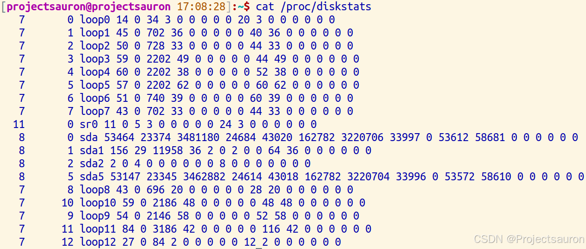
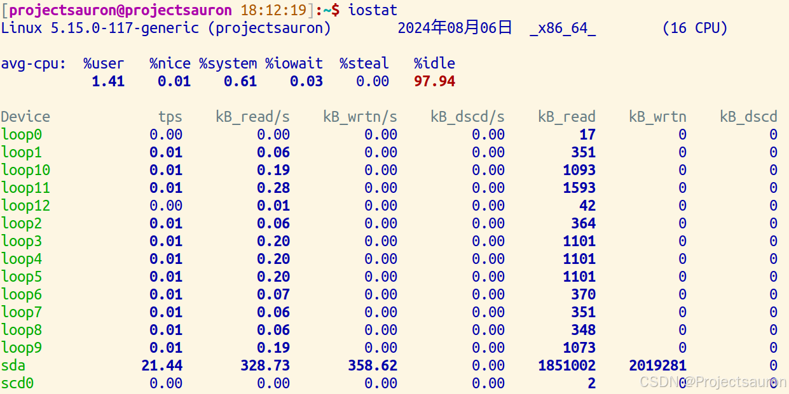
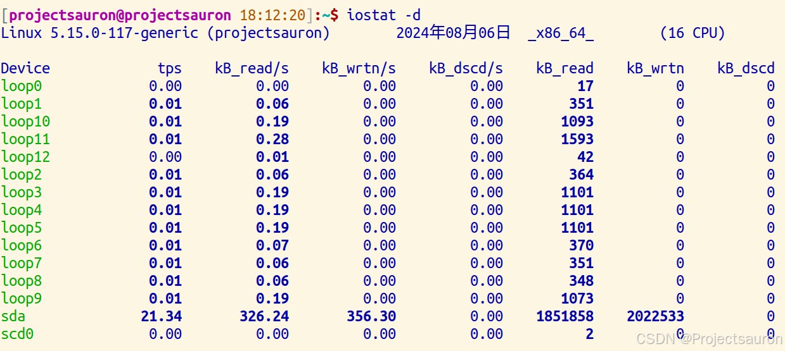
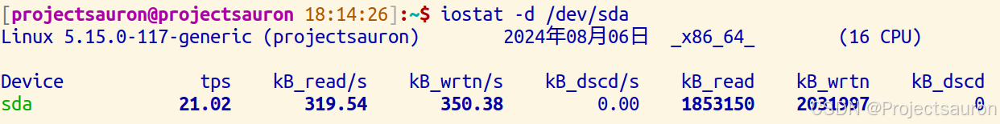
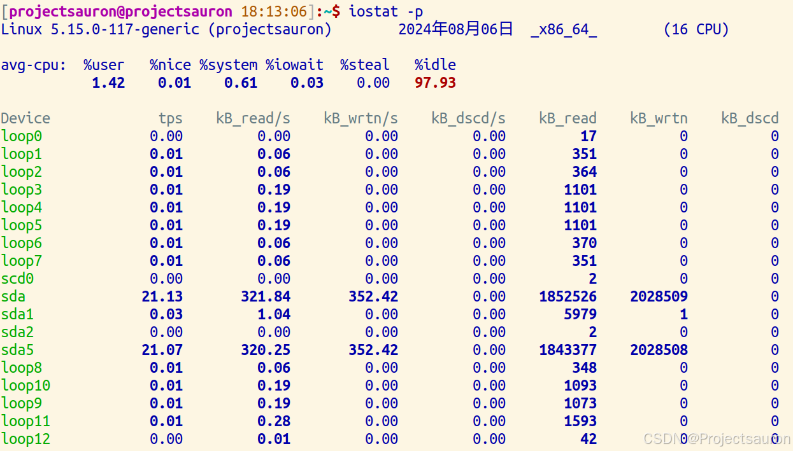
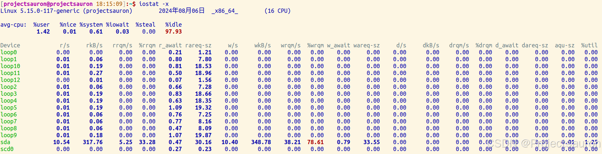
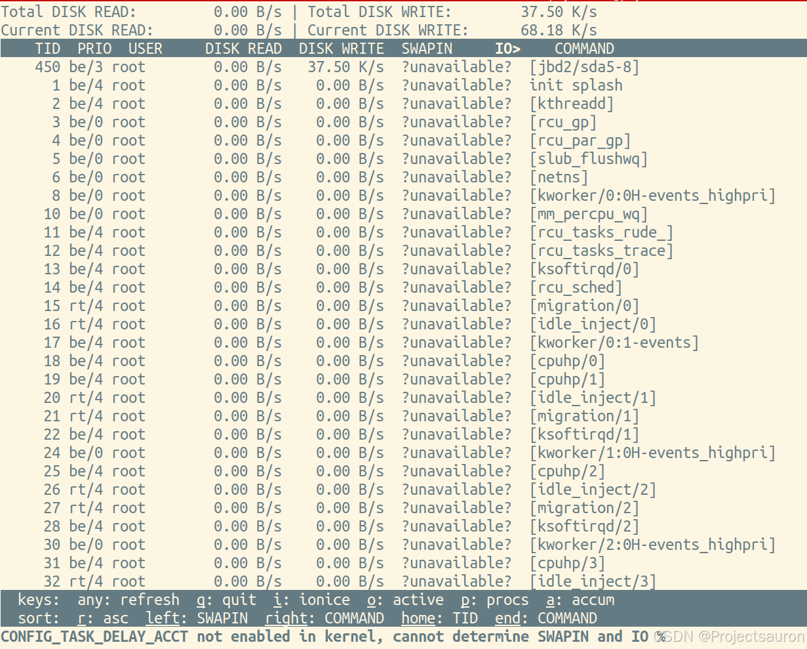
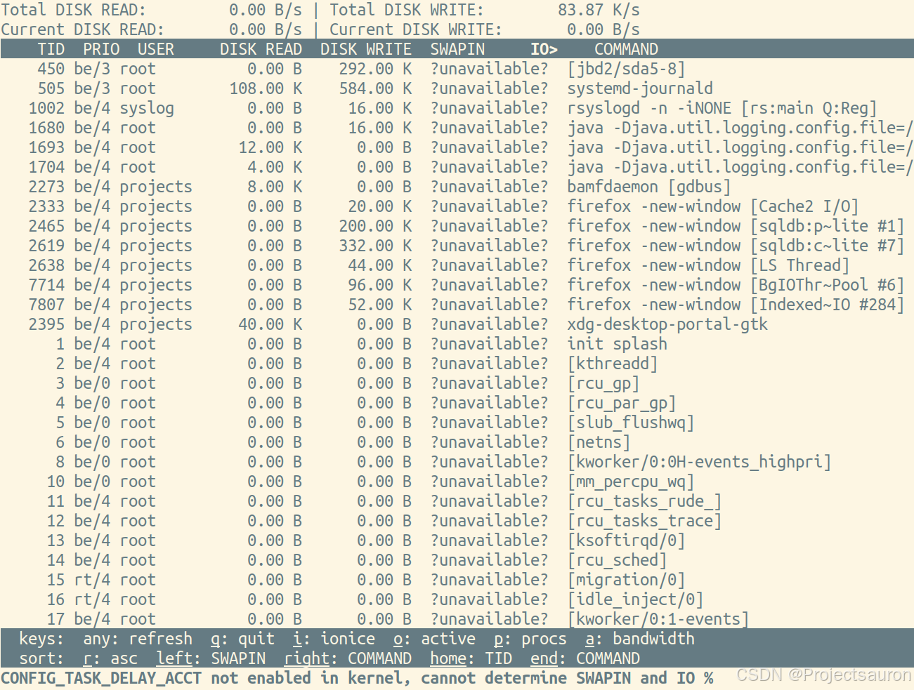
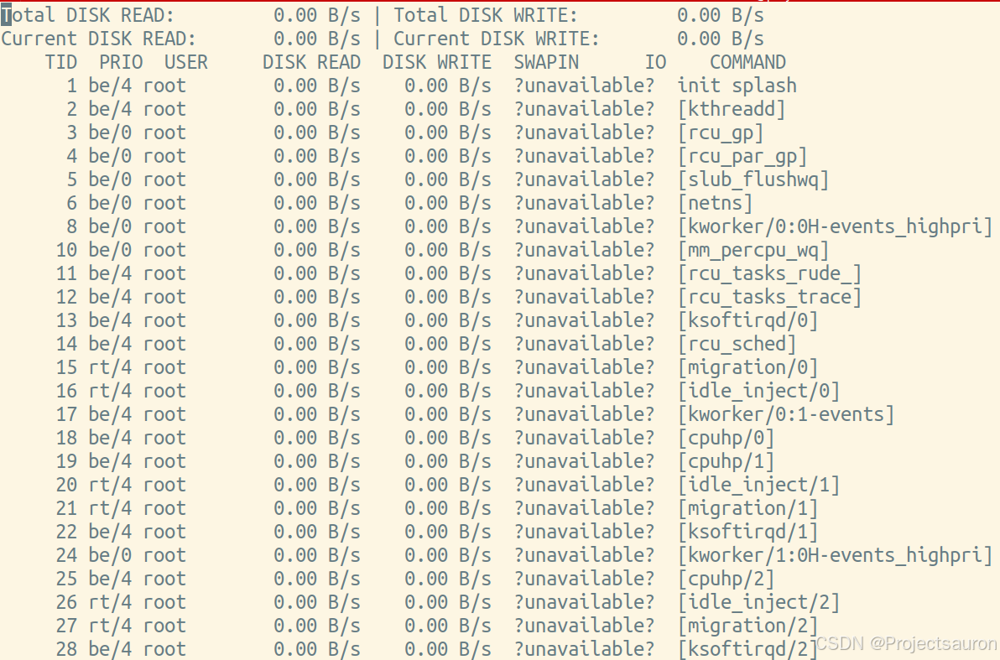

Linux 利用 iostat 和 iotop 进行 IO 分析
@toc
一、概述
在Linux 系统上，iostat 和 iotop 这两个 IO 数据工具非常常用。它们都是性能分析领域中不可缺少的工具性软件。
如果 Linux 系统性能变慢，我们会用 top 命令 来查看系统性能。它被用来检查是什么进程在服务器上占有如此高的使用率，对于大多数 Linux 系统管理员来说很常见，现实世界中被 Linux 系统管理员广泛采用。
如果在进程输出中你没有看到很大的不同，你仍然有选择查看其他东西。比如你可以在 top 输出中检查 wa 状态，因为大多数时间里服务器性能由于在硬盘上的高 I/O 读和写降低了性能。如果它很高或者波动，很可能就是它造成的。因此，我们需要检查硬盘上的 I/O 活动。
我们可以在 Linux 中使用 iotop 和 iostat 命令监控所有的磁盘和文件系统的磁盘 I/O 统计。
二、iostat
1、下载
iostat 工具是 sysstat 包的一部分，所以我们可以轻松地在包管理器地帮助下安装，因为在所有的 Linux 发行版的仓库都是可以获得的。
对于 Fedora 系统，使用 DNF Command 来安装 sysstat。
1 | |
对于 Debian/Ubuntu 系统，使用 APT-GET Command 或者 APT Command 来安装 sysstat。
1 | |
对于基于 Arch Linux 的系统，使用 Pacman Command 来安装 sysstat。
1 | |
对于 RHEL/CentOS 系统，使用 YUM Command 来安装 sysstat。
1 | |
对于 openSUSE Leap 系统，使用 Zypper Command 来安装 sysstat。
1 | |
2、常用选项
iostat 命令，是用来展示系统中的 IO 设备和 CPU 使用情况的。它的最大优势在于能汇报所有块设备活动的统计情况，同时也能汇报出 CPU 使用情况。但是 iostat 命令有一个缺陷，就是它不能对每个应用程序进程进行深入分析，只能分析系统的整体情况。
我们先来看 iostat 如何使用，它的使用形式如下:
1 | |
下面是一些常用选项：
- -c：仅显示CPU使用情况
- **-d [设备名]**：查看具体设备和它的分区的 I/O 统计信息，不加设备名则是查看所有设备的 I/O 统计
- -k：显示状态以千字节每秒为单位，而不使用块每秒
- -m：显示状态以兆字节每秒为单位
- -N：查看 LVM 磁盘 I/O 统计报告
- -p：仅显示块设备和所有被使用的其他分区的状态
- -t：显示每个报告产生时的时间
- -V：显示版号并退出
- -x：显示所有设备的详细的 I/O 统计信息
输出内容：
- Device：设备名称，或者分区名称
- r/s：每秒实际读取请求的数量
- w/s：每秒实际写入请求的数量
- rMB/s：每秒实际读取的大小，单位为MB
- wMB/s：每秒实际写入的大小，单位为MB
- rrqm/s：每秒合并的读取请求数量
- wrqm/s：每秒合并的读取请求数量
- %rrqm：合并读取请求的百分比
- %wrqm：合并写入请求的百分比
- r_await：读取请求处理完成等待时间(单位是毫秒)
- w_await：写入请求处理完成等待时间(单位是毫秒)
- aqu-sz：平均请求队列长度
- rareq-sz：读取请求的平均大小(单位为KB)
- wareq-sz：写入请求的平均大小(单位为KB)
- svctm处理IO请求所需的平均时间(不包括等待时间，单位是毫秒)
- %util磁盘处理IO请求的时间百分比
有了这些量化数据，我们就能判断每个硬盘分区的 IO 使用情况，从而分析出哪个设备占用 IO 请求量高或者低、占用时间多少、读取或者写入的数据量有多少。这样，性能瓶颈出现在哪个设备上，我们心中就有数了。
3、/proc/diskstats 文件
iostat 命令的数据来源，主要的数据来源是 /proc/diskstats 文件，它记录着块设备 IO 操作的全部统计信息。

下面来看一下这个文件的数据结构，它的每一行代表一个块设备或者块设备的分区，总共 20 列数据，每一列的内容如下：
| 序号 | 内容 |
|---|---|
| 1 | 主设备号 |
| 2 | 次设备号 |
| 3 | 设备名 |
| 4 | 已读取IO请求数量 |
| 5 | 读取的合并IO请求数量 |
| 6 | 读取的扇区数 |
| 7 | 读取IO请求的总等待时间(毫秒) |
| 8 | 已写入IO请求数量 |
| 9 | 写入的合并IO请求数量 |
| 10 | 写入的扇区数 |
| 11 | 写入IO请求的总等待时间(毫秒) |
| 12 | 加权的IO请求数量 |
| 13 | 此块设备活动的总时间(毫秒) |
| 14 | 队列中所有IO请求的总等待时间(毫秒) |
| 15 | 已丢弃IO请求数量 |
| 16 | 丢弃的合并IO请求数量 |
| 17 | 丢弃的扇区数 |
| 18 | 丢弃IO请求的总等待时间(毫秒) |
| 19 | 已刷新的IO请求数 |
| 20 | 刷新IO请求的总等待时间(毫秒) |
Linux 块设备层在处理每个 IO 请求的时候，都会更新这些数据。iostat 只使用了其中部分数据。由于这些数据是线性增加的，iostat 只需要经过多次采集，进行简单的运算就可以了。
iostat 只是负责的工作其实很简单，就是采集数据并计算显示。我们通过一段时间的 IO 请求数据、写入和读取的数据量、IO 请求等待时间等等这些数据，就可以评估一个设备的 IO 性能了。
3、一般使用
- 不加参数会看到完整的信息

2. 查看所有设备的 I/O 统计

加上设备名可以看到指定的设备 IO 信息：

- 查看所有的设备和分区的 I/O 统计
4. 显示所有设备的详细的 I/O 统计信息

三、iostop
使用时需要 root 权限
1、下载
对于 Fedora 系统，使用 DNF 命令 来安装 iotop。
1 | |
对于 Debian/Ubuntu 系统，使用 API-GET 命令 或者 APT 命令 来安装 iotop。
1 | |
对于基于 Arch Linux 的系统，使用 Pacman Command 来安装 iotop。
1 | |
对于 RHEL/CentOS 的系统，使用 YUM Command 来安装 iotop。
1 | |
对于使用 openSUSE Leap 的系统，使用 Zypper Command 来安装 iotop。
1 | |
2、常用选项
上面的 iostat 工具，只能收集量化到每个块设备的读写情况，但如果我们想知道每个进程是如何使用 IO 的就做不到，这就要用到 iotop 命令了。
iotop 命令是一个 top 类工具，可以监视磁盘 I/O 使用状况，还可以作为 iostat 的升级工具使用。iotop 命令具有与 Linux 系统自带的 top 相似的 Ul，只是 top 更关注进程，而 iotop 更关注 IO。
iotop 命令它是使用 Python 语言编写而成，需要用 Python2.5 以上的版本和 Linux 内核 2.6以上的版本。iotop 提供了源代码和二进制软件包，可以自己选择安装。在前面已经说明了如何安装 ，iotop。
像 iostat 一样，我们一起看看 iotop 如何使用，它的使用形式如下:
1 | |
下面是一些常用选项：
- -a：以累计方式显示信息，数据从 iotop 命令启动开始做计算
- -o：只显示有 IO 操作的进程
- -b：批量显示，无交互，主要用作记录到文件
- -n NUM：NUM 是数字，显示（NUM）次，主要用于非交互式模式
- -d SEC：SEC 是秒数，间隔（SEC）秒显示一次
- -p PID：PID 是进程 id，监控 id 等于 PID 的进程、
- -q：列名称只在第一次迭代时打印
- -qq：列名称从不打印
- -qqq：不打印 IO 摘要
- -u USER：USER 是用户名，监控用户等于 USER 的进程
- -t：增加时间戳列
输出内容：
- PID：进程的 id
- PRIO：进程优先级
- USER：进程的所属用户
- DISK READ：进程每秒读取硬盘的数据量
- DISK WRITE：进程每秒写入硬盘的数据量
- SWAPIN：swap 交换百分比
- IO：等待 IO 百分比
- COMMAND：进程对应的应用程序文件
有了这些量化数据，我们就能判断哪些进程是 IO 型进程，哪些进程是计算型进程，每个进程的访问 IO 的数据一目了然。
根据这些数据，我们还能进一步分析出哪个进程使用 IO 的量是高或者低、占用时间多少、进程优先级多少。IO 性能瓶颈出现在哪个进程上，需要优化哪个进程的 IO 模型，我们心中就有底了。
3、一般使用
- iotop
1 | |

2. 以累计方式显示信息
1 | |

3. 利用重定向连续记录一段时间的信息
1 | |

4. 2s 剧新 1 次，刷新三次信息后结束
1 | |